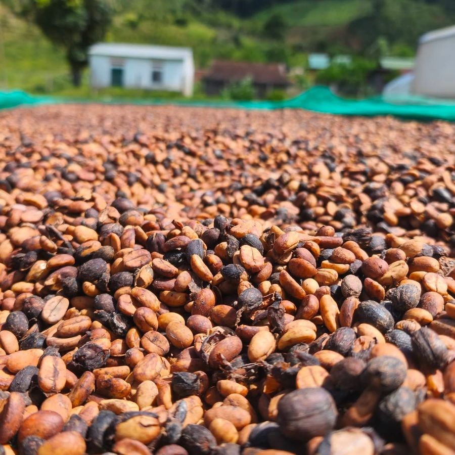

MeDili庄园的十二个月
以自然方式照料Di Linh一片15年树龄的Origin Robusta庄园的一年：以有机质为基础，化肥适量补充。选择月份，即可查看庄园的变化、要做的工作、肥料、用水、用工和鲜果产量。
采收季的庄园
Robusta红熟后采摘，再晾晒。



图1
根据右侧参数估算。果实数按每公斤650颗假设，建议实际数一数：取1公斤熟果，数完后再调整。
| 采摘批次 | 时间 | 粉水比 | 鲜果 / 公顷 | 工日 / 公顷 | 要求 |
|---|
每公顷12个月日历
点击一行即可在庄园上查看该月。施肥量随所选的化肥减量而变化。实际日期取决于当年的天气。
| 月份 | 阶段 | 主要工作 | 有机、微生物 | 无机肥料（公斤/公顷） | 用水（立方米/公顷） | 用工 |
|---|
施肥：以有机肥为基础，无机肥补充
推荐用量是应权衡的上限。只有逐块检测土壤，才知道能减多少。
| 养分（公斤/公顷） | 林同省常见施肥方式 | 推荐 | MeDili | 商品肥料 |
|---|
一年费用
单价是用于比较的示例。请输入自己的实际采购价格。
不含折旧、土地、初加工、运输、税费和管理用工。生豆示例价格89,000 VND/公斤取自林同省2026年10月27日，价格每天变动。
常见错误
| 迹象 | 原因 | 处理方法 |
|---|
本月庄园工作单
按所选月份发给庄园组长。
需要守住的界限
- 先测土。1月逐块取样，检测pH、有机质和氮磷钾。不同的庄园，施肥量也不同。
- 逐步减量。第一年减约20–30%，观察产量后再继续减。
- 农药。仅在超过防治阈值时使用，只用许可名录内的产品，并严格遵守采收前的安全间隔期。
- 还不能称为有机。仍在使用无机肥的庄园只能说“以自然方式耕种”，在获得认证前不要标注“有机”（organic）。
综合多方资料。庄园为示意模型。工作日历、用工数、各批采摘比例和单价都是为Di Linh做规划的估算，并非MeDili庄园的实测数据。建议请当地农技推广人员复核。
迷恋Di Linh的味道
来自MeDili Coffee Farm的Di Linh产地咖啡。欢迎通过Zalo了解庄园与咖啡。
Zalo MeDili 0966 770 788